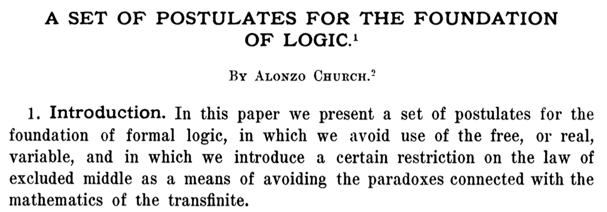
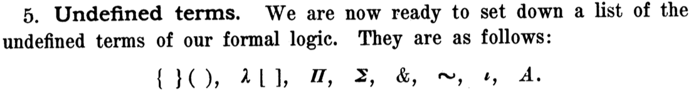

Материалы курса: https://maxxk.github.io/formal-models-2015/
Конечный автомат — более простая модель, чем машина Тьюринга, был описан в 1943 году — через 7 лет после публикации Тьюринга (и без связи с ним)!
Model checking позволяет доказывать низкоуровневые свойства. Наша задача — научиться доказывать свойства высокоуровневые; двигаться между уровнями абстракции, сохраняя справедливость доказательств.
В этом нам поможет современная интуиционистская теория типов, к которой мы будем подходить со стороны типизированного \(λ\)-исчисления.
Рассмотрим формулы, составленные из выражений вида:
Введём правило переписывания (\(β\)-редукция):
\[ (λx. F) · G ⟶_β F[G/x] \]
Буква \(α\) зарезервирована для понятия \(α\)-эквивалентности — формулы, эквивалентные с точностью до переименования переменных.
Вычисление считается завершённым когда нет \(β\)-редексов (подформул, к которым применима \(β\)-редукция)

Church A. A Set of Postulates for the Foundation of Logic // The Annals of Mathematics. 1932. Vol. 33, № 2. P. 346–366.

M. Schönfinkel (1924), H. Curry (1930)
Формальная система, синтаксис которой состоит из переменных, парных скобок и комбинаторов (правил преобразования строк символов). Эквивалентна машине Тьюринга, близко связана с \(λ\)-исчислением.
Y-комбинатор — примитивный комбинатор рекурсии. Если вместо переменных использовать \(λ\)-абстракцию и арифметические выражения, наивная реализация факториала могла бы выглядеть так:
Fact := Y (λ fact. λ x.
if (x == 0) return 1
else return x*fact(x - 1))1935 (Клини, Россер), 1941 (Карри), 1942 (Карри)
Если дана формальная система, удовлетворяющая следующим свойствам:
может быть определён оператор импликации \(⊃\), такой, что для любых термов \(M, N\):
...то любой терм B выводим с помощью следующего построения:
П.1 — «плохой» терм.
Основная идея — если формальная система допускает неограниченный оператор рекурсии, то она противоречива. Это справедливо для любой формальной системы, эквивалентной комбинаторной логике или λ-исчислению.
B. Russel, A. Whitehead. 1910 – 1913 (3 тома).
— фундаментальный труд по формализованным основаниям математики.
В книгах используется слегка отличающаяся от современной логическая нотация, но в целом их достаточно легко понять.
Авторы (до результатов Гёделя) пытались описать математику с позиций формализма и в этом преуспели.
Для того, чтобы преодолеть парадокс Рассела, предлагалось рассматривать объекты как принадлежащие к некоторым типам. Типы определяются как область истинности некоторого утверждения.
При изучении функций комплексного переменного, мы не пытаемся подставить вместо аргумента, например, бесконечномерный оператор. Все утверждения формируются с подразумеваемым условием «x — комплексное число».
Типы позволяют избавиться от циклических определений.
1940 (Чёрч); далее представлено определение, ближе к современной записи.
http://plato.stanford.edu/entries/type-theory-church/
Пусть дано множество базовых типов B, * ∈ B
Допустимые типы:
\[ τ ≡ b \; | \; τ_1 → τ_2, \qquad b ∈ B. \]
Стрелка — правоассоциативна:
α → β → γ ≡ α → (β → γ)
Сокращение: α' ≡ α → α
* — «тип типов», тип высказываний
У Чёрча — в обратном порядке и без стрелок (α → β → γ ≡ (γβα))
Формулы:
Современная формулировка исчисления (только вычислительная часть) не содержит логических констант и типа * (точнее, * — это «тип всех типов», но не входит в константу τ)
Грамматика:
У Чёрча индексы типов обязательны, но мы будем их пропускать, если это уместно и использовать отношение типизации.
Окружение типизации Γ — конечный набор высказываний \(x : α\) (x имеет тип α), где \(x\) — символ переменной, а \(α\) — тип.
[] — пустое окружение, \(x : α ∈ Γ\) записывается как суждение \(Γ ⊦ x : α\) (из окружения выводимо, что x имеет тип α).
\(Γ, x : α\) — окружение Γ, расширенное суждением \(x : α\).
Расширенная грамматика и правила вывода исчисления задаются в терминах таких суждений — правил типизации (и известного нам правила β-редукции)
$ \dfrac{c_α \text{— константа типа α}}{Γ ⊦ c : α}$, включая логические константы, если мы их рассматриваем
$ \dfrac{Γ, x : σ ⊦ e : τ}{λx_σ.e : σ → τ}$, обычно абстракция записывается как $λ x : σ . e $
$ \dfrac{Γ ⊦ x : σ → τ, \qquad Γ ⊦ y : σ}{Γ ⊦ x_{σ → τ} · y_σ : τ}$
Допустимы только типизируемые формулы, т.е. те, для которых из данного окружения можно вывести тип.
Если используются логические константы, то импликация, как в алгебре логики \(A_o ⊃ B_o ≡ (¬A)∨B\) и Modus Ponens (A ⊃ B, A ⟹ B)
τ ≡ b | α → β
Правила типизации, используемые для определения типов, можно структурировать (следующая структура носит название «естественная дедукция», natural deduction):
Редекс — терм удаления, для которого есть правило редукции.
Нормальная форма терма относительно редукции — это такой вид, при котором к нему неприменимы правила редукции.
Головная нормальная форма терма — если в головной позиции (корне дерева) не стоит редекс.
Нормализация — свойство формальной системы: если у терма есть нормальная форма, то она единственная.
Сильная нормализация — у всех термов есть единственная нормальная форма (= нет термов, редукция которых не завершается).
Просто типизированное λ-исчисление обладает свойством сильной типизации.
Доказательство такого свойства выполняется с помощью моделей —
Обычно определяется следующим образом: A эквивалентен B, если A и B приводятся β-редукцией к идентичному виду, с точностью до корректных (не меняющих) переименований переменных. На индексах де Брёйна последнее замечание неактуально.
Пусть \(f : α → β\). Тогда \(λ (x : α). f · x\) интуитивно эквивалентен исходной \(f\), но по указанному выше определению формально это разные термы.
η-эквивалентность включает такое понятие и, в случае просто типизированного λ-исчисления, не нарушает разрешимости эквивалентности типов.
Проверка типов разрешима — если есть алгоритм, который для любого терма определяет, корректно ли он типизирован.
Эквивалентность термов разрешима — если есть алгоритм, который для любой пары термов определяет, эквивалентны ли они при заданных правилах.
Типы — импликативные суждения. Доказательства — термы, имеющие этот вид.
Если ввести тип ложных высказываний как базовый тип False без правил введения и с правилом удаления ex falso, можно ввести и отрицание — «не α» ≡ α → False.
Алгоритм проверки типов.
Достаточны аннотации типов у констант и переменных абстракции, остальные — можно вывести.
Две взаимно-рекурсивные функции — check и infer.
infer выводит тип терма, check проверяет, что терм имеет заданный тип.
Опциональные аннотации.
В частности, для нумералов Чёрча представимый класс называется «расширенные полиномы» над ℕ:
ifzero(n, m, p) = if n = 0 then m else pВ следующий раз мы рассмотрим различные способы расширения набора типов и постараемся убрать разделение между типами и термами.
Задача 5.1** Реализовать алгоритм двусторонней проверки типов для λ-исчисления с простыми типами (синтаксис входных данных — на ваше усмотрение).
Задача 5.2* Реализовать нумералы Чёрча с операцией сложения.